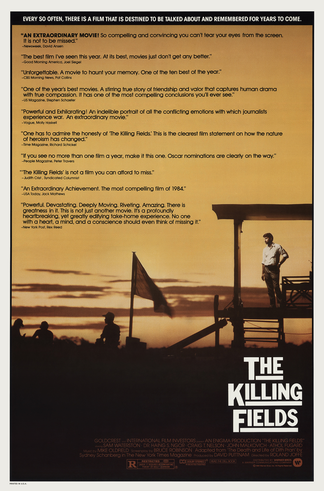

The Killing Fields
57th Academy Awards
(Oscars 1985)
7 Nominations, 3 Awards
| Watched |
| Nominations | ||
|---|---|---|
| Category | Nominees | Result |
| Best Picture | David Puttnam | Nominated |
| Actor in a Leading Role | Sam Waterston | Nominated |
| Actor in a Supporting Role | Haing S. Ngor | Won |
| Directing | Roland Joffé | Nominated |
| Writing (Screenplay Based on Material from Another Medium) | Bruce Robinson | Nominated |
| Cinematography | Chris Menges | Won |
| Film Editing | Jim Clark | Won |